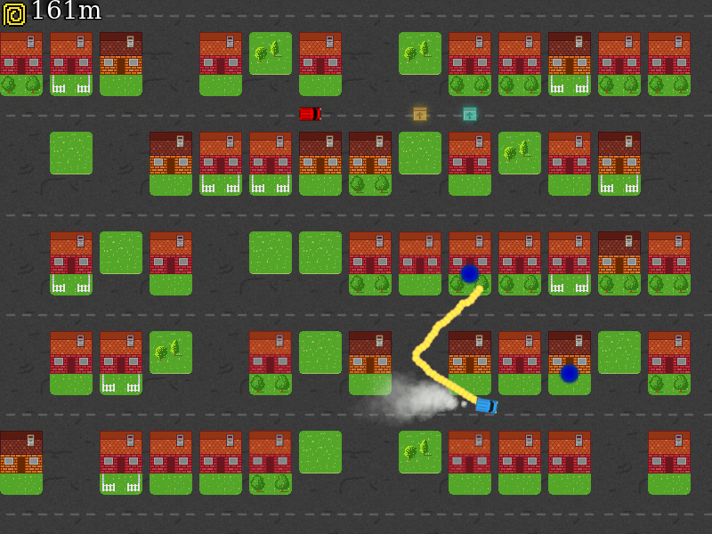

Buddinge
In this game you control a small van in the city Buddinge. It is your job to connect as many buildings
as possible before the time runs out.

Start Game
How to Play
You control the car with the arrow keys:
- Up: Accelerate
- Down: Break / Reverse
- Left: Turn counter clockwise
- Right: Turn clockwise
- Space: Roll out (more) cable
The game play goes like this
- Blue dots will appear in front of the two buildings that needs to be connected.
- Drive to the lawn in front of one of the marked houses
- Press and hold space to roll out some cable
- Drive to the lawn in front of the other marked house
- A connection will be made and you gain some points and some extra time
Notice that the amount of cable is limited, so do not roll out too much.
There is also limited time to make the connection, so hurry up!
You can collect powerups along the way
Ludum Dare #30 - Connected Worlds
This game was created by a small team from Open Space Aarhus for Ludum Dare #30. The theme for the game jam was Connected Worlds